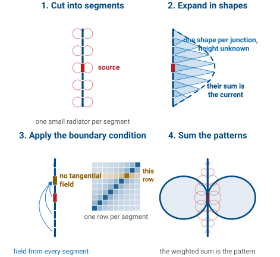

L8 - Dipole Simulation Lab#
Dipole Simulation Lab
Today we compute the radiation pattern numerically, for an antenna nobody can solve on paper.
Lesson 8 · Antennas, Phased Arrays, and Radar Systems · Dr. Neil Rogers
Slides
Learning Objectives
- I can explain why we compute a radiation pattern numerically, and how the method of moments does it — discretize the source, expand the current in basis functions, enforce the boundary condition, and sum the segment patterns.
- I can build a wire-dipole model with defensible segmentation and excitation, and run frequency sweeps and pattern computations.
- I can compare simulated impedance, resonant length, pattern, and gain against the analytical half-wave-dipole predictions and account for every difference.
- I can recognize when a simulation is misleading me — segmentation too coarse, wire radius unreasonable, source misplaced — and apply the standard convergence and energy checks.
Where We Were
Lesson 6: the pattern is the radiation integral over whatever current sits on the source.
Lesson 7: we prescribed that current, and the integral closed in a formula.
Both steps work for a handful of shapes.
Nothing in the last two lessons claimed that a wire’s current must be a sinusoid. Lesson 6 ran the same integral over an infinitesimal element, a uniform line source, and a sinusoidal standing wave, and compared the three patterns side by side; Lesson 7 used a triangular current for the short dipole and a sinusoid for the half-wave one. The pattern came out of the same machinery every time. What limits that machinery is not which current you pick, it is that you have to pick one at all and then evaluate the integral in closed form afterward. A fat wire, a bent wire, a wire over a ground plane, or an array whose elements couple will hand you neither a current you can write down nor an integral you can do.
What We Are Actually After
The deliverable is the radiation pattern of an antenna nobody can solve on paper. The method of moments is how we get that pattern numerically. The currents it reports along the way are the means, not the end.
Keep that straight and the rest of the lesson has a spine. Every rule you are about to meet — segments per wavelength, segment length against wire radius, where the source card goes — exists to protect a pattern computation, and the checks at the end of the lab are pattern checks. The currents are how the method gets there, and they are worth looking at because they are where a broken model shows itself first, but they are not the reason we run the solver.
Three Full-Wave Solvers
FDTD |
FEM |
MoM |
|
|---|---|---|---|
Meshes |
the air |
the air |
the metal |
Solves |
in time |
one frequency |
one frequency |
Unknowns |
fields |
fields |
currents |
Boundary |
absorbing box |
absorbing box |
built in |
Best for |
broadband, mixed media |
dielectrics, curved shapes |
wires in free space |
All three are full-wave solvers: they solve Maxwell’s equations with no high-frequency approximation, which is what separates them from the ray and physical-optics methods you will meet in Module 3. They differ in what they turn into unknowns.
The finite-difference time-domain method (FDTD) fills a box of air around the antenna with a grid, stores the fields at every cell, and marches them forward in time. One run gives every frequency at once, and any material can sit in any cell, which is why it is the method for broadband problems and for inhomogeneous media. The finite element method (FEM), the solver inside HFSS, fills the same box with a mesh of tetrahedra and solves for the fields at one frequency, on a mesh that can follow a curved dielectric closely. Both need the box to end somewhere, and the edge of the box has to absorb outgoing waves without reflecting them: a perfectly matched layer that you size and place.
The method of moments (MoM), the solver inside NEC, meshes only the conductor. The unknowns are the currents on it, and the field each current radiates into free space is known in closed form, the Green’s function, so there is no air to mesh and no boundary to absorb. The price is a dense matrix, because every segment couples to every other, and a dielectric has no natural place in it.
Why MoM for a Wire
Nine segments make a \(9\times9\) matrix. FDTD meshes the air around it.
Free space is in the Green’s function, nothing to tune.
One frequency per solve is the sweep you will run.
The cost: a dense matrix and no dielectrics.
Count what each solver has to carry for the dipole you are about to build. NEC with nine segments stores a \(9\times9\) matrix and solves it in microseconds, and at 81 segments the matrix is still only \(81\times81\). An FDTD or FEM model of the same dipole has to fill a box of air several wavelengths across with cells a small fraction of a wavelength on a side, which is millions of unknowns before the wire is even in it, and then terminate the box in an absorbing layer thick enough and far enough away not to reflect. In free space the method of moments needs none of that: the field of a segment’s current at any point is a closed-form expression, and radiation to infinity is built into it. Nothing is truncated and nothing is tuned.
The solve is at one frequency, which sounds like a limitation until you look at the procedure below. Every question the lab asks is asked at a frequency, and the sweep is a loop over solves. The cost is real, though. The matrix is dense, so memory grows as \(N^2\) and the solve time as \(N^3\), which is why a dense MoM tops out around tens of thousands of unknowns where FDTD runs to billions of cells. And a dielectric has no natural place in it: a patch on a substrate, or a wire inside a lossy body, is the signal to reach for HFSS or CST. For a wire in air, NEC is the right tool, and it has been since 1981.
The Source Becomes N Small Radiators
Radiation is superposition over the source. Take that literally.
Cut the source into \(N\) segments, each a radiator you already know.
The pattern is their weighted sum; only the weights are unknown.
\(f_n\): basis shapes you pick. \(a_n\): the unknowns.
This is the move that makes the problem finite. An unknown function on the wire becomes \(N\) unknown numbers, and the pattern integral becomes a sum of \(N\) elementary patterns with those numbers as coefficients:
where each \(F_n\) is the pattern of one short segment carrying its basis shape — an object Lesson 6 already handed you. NEC’s basis functions are a constant-plus-sine-plus-cosine triple on each segment, chosen so that current and slope match across the junctions, but the choice is a modeling decision rather than a physical claim. Nothing here asserts what the current is.
The choice of shape is the key decision. A pulse, constant across its segment, is the simplest, but it makes the current a staircase, and a staircase puts all of its charge in spikes at the steps, so the near field, and with it the reactance, comes out badly. A triangle, peaking at one segment junction and falling to zero at the next, keeps the current continuous and spreads the charge evenly. NEC’s piece of a sinusoid on each segment is what a standing wave looks like up close, so few segments are needed before the sum stops changing. The convergence widget below draws the pieces.
Where the Weights Come From
Total tangential field is zero on a conductor, on every segment.
\(N\) equations, \(N\) unknowns, one matrix solve.
Out come the weights, and with them the pattern.
\(Z_\text{in}\) comes from one weight, at the feed.
The scattered field is the field the unknown segment currents produce, so every row of the matrix is a statement about how strongly one segment’s current is felt at another — strongest on the diagonal, since a segment feels itself most. One row per segment makes the system square, and a laptop finishes it in milliseconds. Depending on which form of the integral equation you start from this is Pocklington’s or Hallén’s equation; we will not derive either. The result is what matters: a pattern computed without ever prescribing the current that produced it, which is exactly the step Lesson 7 could not take. Today you reconcile that pattern, and the impedance that came with it, against the numbers you worked out by hand. A difference you can explain is worth more than an agreement you cannot, so the deliverable is not a matching number. It is an account of every place the two answers part company.
The Method of Moments in Four Steps

The same nine-segment dipole carries through all four panels. In the first, the wire is cut into segments and each segment is a small radiator whose pattern we already know from Lesson 6. In the second, the current is written as a sum of known shapes, one triangle per junction, and only their heights are unknown; the dashed line is the current they add up to. In the third, the boundary condition of a perfect conductor, no tangential electric field on the metal, is applied to one chosen segment: the fields that all the segments put there, together with the source field, must total zero. That is one row of the matrix: one row per segment, strongest on the diagonal because a segment feels itself most. In the fourth, the segment patterns, now weighted, add up to the pattern of the whole antenna.
Assumptions and Consequences
A simulator knows no more physics than you do. It runs the same superposition you would run, over the source you described. Everything it reports is as good as the segments, the basis functions, the radius, and the source.
It sounds simple, but there are consequences to this approach: every number the simulator reports inherits the choices in the model. The segments set how finely the current can vary, the basis functions set what shape it can take between the samples, the radius sets whether the thin-wire model describes the conductor at all, and the source sets the one segment the impedance is read from. The program checks none of them.
NEC and Its Front Ends
NEC: the Numerical Electromagnetics Code, 1970s.
It knows thin wires: segments with a length, a radius, and a position.
It reads cards from a text file; everything else is a front end.
Ours is nec_lab; in the field, 4nec2.
NEC — Numerical Electromagnetics Code, written at Lawrence Livermore in the 1970s and still the workhorse of wire-antenna modeling — is this method specialized to thin wires. It has no interface of its own: it reads a text file of cards and writes a text file of results, and every front end writes the same cards. Ours is nec_lab, written for this course and served from the course site; 4nec2 is the free Windows front end you will meet in the field. The cards do not move between versions the way menu items do, so the cards are what we teach.
NEC does not know about antennas. It knows about thin wires: straight segments with a length, a radius, and a position. A dipole is one wire with a segment count, and a Yagi is several wires. That simplicity makes NEC fast, but we have to follow some rules to avoid divergent results.
Finding the Impedance in MoM
One segment carries the 1 V source and is the terminal.
At 1 V, the impedance is the reciprocal of the feed current.
The other currents set the pattern.
A misplaced source corrupts the impedance and barely moves the pattern.
NEC drives one segment with a 1 V source, and that segment is the antenna terminal: there is no connector, no coaxial gap, and no balun in the model. The solve returns a whole vector of currents, one per segment, but the terminal impedance comes from exactly one entry in that vector. You applied a known voltage to the source segment, and the solver reports the current that flows there, so Ohm’s law finishes the job:
With the customary \(V_{\text{feed}} = 1\ \text{V}\) excitation, the input impedance is simply the reciprocal of the feed-segment current, and its complex character carries straight through: a feed current lagging the applied voltage gives a positive reactance, which means an inductive terminal.
There are three consequences to this approach. First, the impedance of the entire antenna comes from a single number in the solution, so it inherits whatever error that one segment carries. Second, the rest of the current distribution does not enter the terminal impedance at all; it sets the radiation pattern through the radiation integral. Third, those two facts together explain a failure mode you will meet later in the lab: a source placed on the wrong segment corrupts the impedance badly while barely moving the pattern, because the pattern is an integral over a current distribution that hardly changed.
The Segmentation Rules
Rule |
Broken |
|---|---|
10–20 segments per half wavelength |
the pattern and gain smear |
\(\Delta < \lambda/20\) |
the impedance drifts |
\(\Delta > 8a\) |
the impedance becomes unreliable |
\(2\pi a \ll \lambda\) |
NEC solves a filament, not your conductor |
Odd segment count |
source off-center |
Refining drives \(\Delta\) toward \(8a\).
Here \(\Delta\) is the segment length and \(a\) the wire radius. The first rule resolves the curvature of the current, and the pattern is an integral over that current, so a coarse mesh smears the pattern and the gain with it. The second keeps the phase nearly constant across a segment, which the basis functions assume; break it and the impedance drifts as you change the segmentation. The third is the thin-wire model’s own limit. It treats each segment’s current as a filament on the wire’s axis and evaluates its field on the surface, a distance \(a\) away, and that describes a segment only when the segment is much longer than the radius. When \(\Delta\) falls below about \(8a\) the segment is closer to a ring than to a piece of a line, the filament no longer describes it, and the matrix entries between neighboring segments become inaccurate.
The fourth rule is about the wire, not the segments. NEC models a wire as a single filament of axial current and enforces the boundary condition on the surface at radius \(a\). That is the problem it solves. The problem we want solved is a conducting cylinder, whose surface current can vary around the circumference and can have a component around the wire near the ends. The two problems have the same answer only when the circumference is small compared with a wavelength, \(2\pi a \ll \lambda\), because then nothing can vary around the wire within a wavelength and the surface current is the same as a filament on the axis. For a large-radius conductor NEC still returns a number, and it is the number for the filament, not for your antenna. The fifth rule is bookkeeping: an odd count puts a segment at the center, and the source card names a segment, so an even count lands the source half a segment off the feed.
Notice that two of these rules pull against each other, because refining the mesh drives \(\Delta\) down toward \(8a\). On a wire whose radius is large relative to the segment length you eventually run out of room, and that limit is informative rather than annoying: the segments have reached the length the thin-wire model needs, and refining further describes your antenna worse, not better.
Segmentation Math at 915 MHz
Quantity |
Work |
Result |
|---|---|---|
\(\lambda\), \(\lambda/2\) |
\(c/f\) |
\(328\), \(164\ \text{mm}\) |
\(\Delta\) |
\(164/21\) |
\(7.8\ \text{mm}\), \(0.024\lambda\) |
\(\lambda/20\) |
\(328/20\) |
\(16.4\ \text{mm} > \Delta\) |
\(8a\), \(a = 0.5\ \text{mm}\) |
\(8 \times 0.5\) |
\(4.0\ \text{mm} < \Delta\) |
Ceiling |
\(164/4.0\) |
41 segments |
Above 41 segments, \(\Delta < 8a\): the segments are shorter than the thin-wire model allows.
Worked example — segmentation math for today’s dipole
At \(f = 915\ \text{MHz}\):
Take a wire of 1 mm diameter, so \(a = 0.5\ \text{mm}\), and start with \(N = 21\) segments:
Now check both bounds. The upper bound is \(\lambda/20 = 16.4\ \text{mm}\), and \(7.8\ \text{mm}\) clears it with room to spare. The lower bound is \(8a = 4.0\ \text{mm}\), and \(7.8\ \text{mm}\) clears that as well. The thin-wire condition also holds, since \(2\pi a/\lambda = 0.0096\).
How far can you refine? The segment length may fall to \(4.0\ \text{mm}\), which corresponds to \(164/4.0 \approx 41\) segments. Past about 41 segments the segment length falls below \(8a\): the wire’s radius is too large for the thin-wire model to describe segments that short, and the extra segments make the answer worse rather than better. That refinement ceiling is worth computing before you touch the keyboard.
All Models Are Wrong, Some Are Useful
Symptom |
Likely cause |
Check |
|---|---|---|
Gain drifts with \(N\) |
too few segments |
double \(N\) |
Impedance wild or oscillating |
\(\Delta < 8a\) |
lengthen segments |
Impedance far from theory |
misplaced source |
odd count, center segment |
Average gain not 1 |
geometry or kernel error |
fix first |
The simulator does not report that it is wrong, so these four checks are the questions you have to ask it. Most groups meet at least two of these symptoms in a lab period, and the last row is the subject of the next frame.
The Average Gain Test
A full-sphere pattern request reports the average power gain.
Lossless, free space: it must be \(1.000\).
\(0.95\) to \(1.05\) is acceptable; \(0.6\) or \(1.4\) means the model is wrong. Fix it first.
Valid only over a full sphere.
Ask NEC for a pattern over the full sphere and it will report the average power gain. For a lossless antenna in free space that number must be \(1.000\), because every watt delivered to the terminals has to leave as radiation. This is a conservation-of-energy audit on your model, and it costs one extra run.
Note
An average gain between 0.95 and 1.05 is acceptable. A value near 0.6 or 1.4 means the model is wrong, and no other number in the output file can be trusted until it is fixed. Check the geometry, the segment-length limits, and the source placement before recording any results. The test is only valid over a complete sphere in free space; adding a ground plane changes the expected value, which is worth remembering when you model a monopole in Lesson 12.
Convergence
The widget above runs a method-of-moments solve in your browser: a thin wire, a voltage source on the center segment, and your choice of basis function. Check show basis functions and the current is drawn as what it is, a sum of overlapping pieces, one per segment junction, each scaled by its solved amplitude; the dots are the amplitudes and the curve through them is the sum. Switch from triangles to sinusoidal pieces, NEC’s choice, and watch the convergence plot: the same answer arrives with fewer segments, because a piece of a sinusoid is already the shape the current wants to take.
Drag the segment count up from 5 and watch two things at once. The current samples settle onto the sinusoid, staying close to it but never matching it exactly, and running largest near the wire ends where the sinusoid is least accurate. At the same time \(Z_{\text{in}}\) stops moving, and that plateau is what “converged” means: it does not mean the answer agrees with theory, only that refining the model no longer changes it. Watch the feed readouts as you drag, since \(V_{\text{feed}}\) is fixed while \(I_{\text{feed}}\) moves, and every change in \(Z_{\text{in}}\) comes from that one current — the red band on the wire plot, where the source sits. The dashed green references are Lesson 7’s \(73\ \Omega\) and \(42.5\ \Omega\), drawn when the wire is exactly \(\lambda/2\) long, and the plateau lands near them rather than on them. The frame on why the half-wave number misses explains that gap.
Now drag the length past \(0.5\lambda\) and the single hump splits into two. Nothing about the solver changed; that is the standing wave of Lesson 7. The current on each arm is a piece of a sinusoid that must be zero at the open tip, so its maximum sits a quarter wavelength in from that tip. On a half-wave dipole each arm is a quarter wavelength long and both maxima land on the feed, which is one hump. Lengthen the wire and each maximum stays a quarter wavelength from its tip, so the two move apart from the feed. By \(0.7\lambda\), the end of the slider, they sit \(0.1\lambda\) either side of the feed with a dip between them, and at \(L = \lambda\) that dip would be a null. The solved current follows the same shape because the tips still force it to zero, and the assumed sinusoid tracks it.
Getting to the Tool
nec_lab runs in your browser:
On the course site. Open Simulator. Nothing to install.
Or a copy your instructor is serving — the address is given in class.
Every route runs the same tool and gives the same answers. The page has a form at the left and a NEC input file at the bottom right: the form writes that file, and the file is what NEC runs.
The course-site version downloads about 6 MB the first time — NEC-2 and Python, both compiled for the browser — and is cached afterwards, so it opens at once and works with no network at all. Nothing you build there leaves your machine.
You can also run it yourself from a clone of the course repository:
python scripts/nec_lab/run.py serve, or double-click
scripts\nec_lab\nec_lab.bat on Windows.
Type the cards yourself at least once, because they are the real interface. They are identical in nec_lab, 4nec2 and every other front end you will meet, and they do not move between versions the way menu items do. The Copy button under the deck puts the cards on your clipboard; they will run unchanged in 4nec2 if you would rather work there, or want to check one tool against the other.
The NEC Input File
Four cards carry the model.
GW 1 21 0 0 -0.08197 0 0 0.08197 0.0005
EX 0 1 11 0 1 0
FR 0 1 0 0 915 0
RP 0 181 1 1000 0 0 1 0
Choose Dipole in the antenna picker and press Build & solve, and the full deck is what appears. Read it before you read the plots, and type it out once by hand into the editor to prove you can:
CM ECE 444 L8 -- half-wave dipole, 915 MHz
CE
GW 1 21 0 0 -0.08197 0 0 0.08197 0.0005
GE 0
EX 0 1 11 0 1 0
FR 0 1 0 0 915 0
RP 0 181 1 1000 0 0 1 0
EN
CM and CE open the comment block, GE 0 closes the geometry in free space,
and EN ends the deck.
Build & solve runs what the form describes; Run these cards runs what is in the editor, which is how you run a deck you typed or changed yourself. Either way the answers land in the same places: \(Z_{\text{in}}\), VSWR, peak gain, HPBW and the average power gain across the top, the pattern cuts below them, and the segmentation rules down the left. Beside the editor, every field of every card is labeled — hover one to see what it means.
This handout names cards, not buttons. Cards are the part that does not change: if a control moves, or you end up in 4nec2 instead, the deck still says exactly what the model is.
Reading the Cards
Card |
What it says |
|---|---|
|
wire 1, 21 segments, \(\pm 81.97\ \text{mm}\), radius \(0.5\ \text{mm}\) |
|
free space |
|
1 V source, segment 11 of 21 |
|
one frequency, 915 MHz |
|
\(\theta\) swept, \(1^\circ\) steps |
All coordinates are in meters. The wire lies along \(z\), matching the course convention, so broadside is \(\theta = 90^\circ\) and the pattern cut above is the E-plane.
When the Tool Disagrees With You
The rules panel and the average-gain readout both warn you. Neither stops a run. NEC will solve a broken model and report the result with the same confidence it reports a good one.
That is the whole point of the segmentation rules: you are the check. The tool can tell you that a number looks wrong; it cannot tell you that a model describes the antenna you meant to build.
Procedure — Predict, Then Run
Predict. Lesson 7’s \(Z_{\text{in}}\), resonant length, gain, and HPBW.
Do the math. \(\Delta\) against \(\lambda/20\) and \(8a\), on paper.
Baseline run. 915 MHz. Record the differences before changing anything.
A prediction written after the fact teaches you nothing, so step 1 is not optional and it is not a formality. Your reference numbers should not change once you see the simulated values.
Procedure — Audit the Model
Tick average power gain, or request a full sphere yourself:
RP 0 19 36 1001 0 0 10 10
If it is not close to 1.000, stop and fix the model.
That request sweeps \(\theta\) from \(0^\circ\) to \(180^\circ\) in \(10^\circ\) steps and \(\phi\) from \(0^\circ\) to \(350^\circ\) in \(10^\circ\) steps, and the final digit of the fourth field is what asks for the average gain. Record the value — it is a deliverable, and it is the one number that licenses all the others.
Procedure — Sweep, Then Trim
FR 0 41 0 0 800 5sweeps 800 to 1000 MHz. Read off where \(X_{\text{in}} = 0\).Hold 915 MHz and shorten the wire until \(X_{\text{in}}\) crosses zero.
A wire cut to \(\lambda/2\) at 915 MHz will not resonate at 915 MHz, so determine where it does and by how much it misses. Then record the resonant length as a fraction of \(\lambda\) and the resistance there, keeping the segment count odd throughout and rechecking \(\Delta\) against \(8a\) after each change.
Trim to resonance does this search for you, and you should not press it until you have done it by hand. Then press it: if your length and the tool’s agree, you have learned something about both. If they do not, one of you missed the reactance crossing.
Procedure — Cuts and Convergence
At resonance take the E-plane cut and the H-plane cut:
RP 0 1 361 1000 90 0 0 1
Re-run at \(N = 11\), 21, 41, 81 and tabulate \(Z_{\text{in}}\) and gain.
Press Pattern CSV and keep the file for Lesson 11.
Record the peak gain, the E-plane HPBW, and the depth of the nulls along the wire axis, and confirm the H-plane cut is a circle to within a small fraction of a decibel. In the convergence study, identify both the point where the answer stops moving and the point where the \(\Delta > 8a\) rule begins to bite.
The pattern file drops straight onto your measured cut in Lesson 11, on one plot. It is absolute dBi, and a chamber measures raw \(S_{21}\), so comparing the two means normalizing each to its own peak, which compares shape. Comparing absolute levels is a gain-transfer measurement against a standard-gain horn, Lesson 9’s material, not something a file can fix. Save it somewhere you will find it in three lessons’ time.
Deliverables
For your midterm antenna:
Pattern: E- and H-plane cuts, HPBW, sidelobes, gain.
Impedance: \(Z_{\text{in}}\) and VSWR across the band.
Checks: average gain, convergence table.
Comparison with hand analysis, every difference explained.
Today’s dipole is the rehearsal. The product of this lab is the Analysis section of the midterm project: the simulated prediction for the antenna you will put on the range in Lessons 10 and 11. The project handout governs what that section must contain; this is how to build it.
Pattern. Predict the E-plane and H-plane cuts, and read the half-power beamwidth, the sidelobe level, and the gain from them.
Impedance. Predict \(Z_{\text{in}}\) and VSWR across the band you will measure, and the resonant frequency.
Checks. Run the average-gain test before recording anything, and show a convergence table so the reader knows the numbers have stopped moving.
Comparison. Set the simulation beside your hand analysis and account for every difference. “Simulation error” is not an account of anything, so name the mechanism. When the measurement comes in at Lesson 11 you will add a third column.
Build it the way you built the dipole today: predict by hand first, model the antenna, check the model, then compare. The dipole comparison table below, filled in, is the worked example.
The Comparison Table
Quantity |
L7 |
NEC |
Diff. |
Why |
|---|---|---|---|---|
\(Z_{\text{in}}\) at \(\lambda/2\) |
\(73 + j42.5\ \Omega\) |
|||
Resonant length |
\(0.47\text{–}0.48\ \lambda\) |
|||
\(R_{\text{in}}\) at resonance |
\(\approx 70\ \Omega\) |
|||
Gain |
\(2.15\ \text{dBi}\) |
|||
E-plane HPBW |
\(78^\circ\) |
Four rows should land within a few percent. The first will not.
Four of those rows should land within a few percent. The first row will not, so the mechanism behind it is worth stating here rather than leaving you to discover it by accident.
Why the Half-Wave Number Misses
\(73 + j42.5\ \Omega\) is the impedance of a sinusoid, not a wire.
Exactly \(\lambda/2\) is about 5% long: inductive, near \(86 + j47\ \Omega\).
End effect: the tip current exceeds the sinusoid, raising the resistance.
Trimmed, the two agree within a few ohms.
The number \(73 + j42.5\ \Omega\) is the impedance of the assumed sinusoid at exactly \(\lambda/2\), not of the wire. The solved current differs from the sinusoid near the tips and at the feed, and the impedance is read at the feed, where that difference is largest, so the resistance comes out near \(86\ \Omega\). Both models agree on where the wire resonates: the sinusoid at about \(0.476\lambda\) for this radius, which is where Lesson 7’s reactance curve crosses zero, and the solved current at about \(0.473\lambda\). A wire cut to exactly \(\lambda/2\) is therefore about 5% long under either model, which is why both call it inductive. The extra \(13\ \Omega\) of resistance comes from the difference in current shape, not from a difference in length; it is the same gap Lesson 7 noted between the model’s \(63\ \Omega\) and a real dipole’s \(70\ \Omega\) at resonance, and trimming does not remove it.
The difference in current shape has a name, the end effect. The assumed sinusoid goes to zero at the wire tips with a clean slope, while the real current approaches the tips more gradually because charge accumulates there. That larger current near the tips is visible in the convergence widget, and it is what raises the resistance and moves resonance slightly shorter.
Note
A useful habit for the rest of the course is this: whenever a simulation and a hand calculation disagree, first ask whether the two are describing the same antenna. More often than not they are not, and the disagreement resolves itself once you make the two models match.
Summary
Symbol / idea |
What it is |
Number to remember |
|---|---|---|
Method of moments |
discretize the wire, expand the current in basis functions, enforce \(E_{\text{tan}} = 0\), solve for the amplitudes, then integrate |
\(N\) unknowns, one matrix solve |
Basis functions |
the shapes the current is built from; NEC uses a piece of a sinusoid per segment |
\(I(z) = \sum a_n f_n(z)\) |
\(Z_{\text{in}} = V_{\text{feed}}/I_{\text{feed}}\) |
terminal impedance from the one segment carrying the source |
1 V drive makes it \(1/I_{\text{feed}}\) |
Segments \(N\) |
segmentation of the wire; odd, so a segment sits at the feed |
10–20 per half wavelength |
\(\Delta\) against \(\lambda\) |
upper bound on segment length, set by phase change |
\(\Delta < \lambda/20\) |
\(\Delta\) against \(a\) |
lower bound on segment length, set by the thin-wire kernel |
\(\Delta > 8a\) |
Convergence |
the answer stops moving under refinement, which is not the same as matching theory |
change \(< 1\%\) per doubling |
Average power gain |
conservation-of-energy audit on a lossless free-space model |
\(1.000\), accept 0.95–1.05 |
\(Z_{\text{in}}\) at exactly \(\lambda/2\) |
inductive because the wire is about 5% long; the resistance is higher because the solved current is not the sinusoid |
near \(86 + j47\ \Omega\) |
Resonant length and gain |
where \(X_{\text{in}} = 0\), and the gain there |
\(\approx 0.473\lambda\), \(2.15\ \text{dBi}\), \(78^\circ\) |
Practice
Where This Is Going
You have predicted an antenna and simulated it. You have not measured it.
A simulation nobody has checked against hardware is a very confident opinion.
Lesson 9 is the theory of checking; L10 and L11 put you on the instruments.
The dipole you modeled today is the antenna you will hang on the analyzer next week, so keep your predicted impedance and resonant length where you can find them. Lesson 9 also introduces the midterm project, an antenna pattern measurement due at Lesson 20 — the measurement block runs early for that reason.
The remaining antenna families come back at Lessons 12 to 14 — loops and monopoles, then patches, slots and horns, then reflectors and Yagis. The monopole is where your new NEC habits get their first real test, because a quarter-wave monopole is only half an antenna and the other half is the ground plane. NEC models ground with its own card, and getting that card wrong is a common way to produce a confident and completely incorrect result, including an average gain that no longer has to equal one.
Beyond that, Module 3 is built entirely on arrays, and an array is just more wires. The segmentation rules you applied to one dipole today apply to every element at once, and the matrix you solved for 21 unknowns becomes a matrix for several hundred. The physics does not change and only the bookkeeping grows, so the habit of predicting before simulating matters more as the models get large enough that nobody can check the answer by eye.